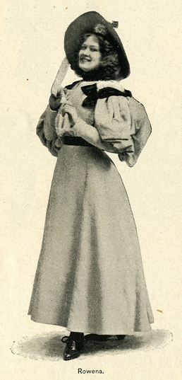
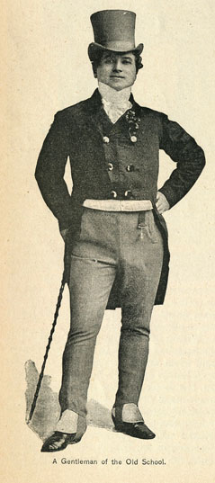
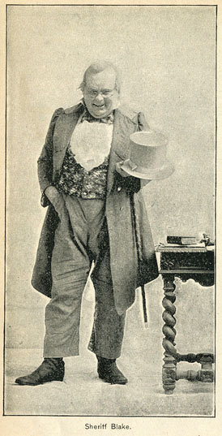

"PUDD'NHEAD WILSON"
By Beaumont Fletcher
The American dramatist is at last beginning to realize his varied field and unhackneyed opportunities. The Civil War has given us at least one superb play -- "Shenandoah." The legends of the Catskills have been richly utilized in "Rip Van Winkle;" Wall Street life has been proved picturesque in "The Henrietta." The fondness of titled folk for our heiresses is strongly used in "Aristocracy." We have been moved by "Alabama" and "In Mizzoura"; and a genuinely noble drama of frontier life and Indian fighting, "The Girl I Left Behind," which has recently scored an immense success in London. We have had a fine New England pastoral, "Shore Acres," and now we have the career of a Yankee -- not in King Arthur's Court -- but in the South before the war, before even the rumors of war.
This play, "Pudd'nhead Wilson," as dramatized by Frank Mayo, I should place among the very best American works, and in the last decade the real value of the native drama has been quite as high in its best phases as the foreign importations.
While Mark Twain must always be cherished with gratitude for the much laughter he has blessed humanity with, and for the cosmopolitan fame he has given American letters, possibly more than any other writer, I cannot believe that he labored long enough and lovingly enough over this latest work. The good fairy that puts bright ideas in the heads of genius, has proffered him something new in plots, and a magnificent chance for deep study in soul-development; but he has not done his share. He has rudely sketched it out and cast it at the world with the indifference of a man pampered and spoiled with popularity. The sketchiness of the treatment, furthermore, is not of the impatient strength and suggestive roughness of an unfinished work of Michelangelo's, but is trivial and slouchy in its general aspect.

Fortunately a skillful and more tender dramatist has rescued the excellences of the book from suffocation, and has added brawn enough of his own to round it out into a work of imposing dimensions. To see the play and then read the book, is to be vitally impressed (as I was by the dramatization of "Trilby") with the superiority of the dramatists's genius over that of the novelist. Of course it is a trite axiom of literature, that dramatic success is the greatest of all literary achievements, but it is not easy to comprehend the truth fully until some such test is applied as the careful comparison of the dramatization of a work with its original. Of course, many a masterpiece of fiction is utterly unfit for a stage-setting; but, given a story of dramatic possibilities, the vividness and truth, the quickness of action and characterization, and the limited elbow-room that test the dramatist certainly prove his success to be harder of achievement than that of the easy-going gossipy novelist with abundant room for descriptions and psychologies and countless ways of inthralling his leisurely reader. Herein is the great mistake of the Christian Church, which has set its ban upon the noblest of all literary activities and the most irrepressible of all artistic ambitions.

The dramatic season just finished has been something appalling. In the South and West the question with the travelling companies was not so much, How much do we make? but How little shall we loose? and How long shall we be able to keep going? In the large Eastern cities, where the theatre is looked upon as a sine qua non of life, matters were only a little bit better. In New York there have been no record-breaking receipts, and the ratio of positive failures to partial successes was three to two. It is gratifying to note that the American play has been on the whole the safest investment of all. The opera "Rob Roy," a native product though Scotch in setting; the howling farce "Too Much Johnson," with slight acknowledgments to a French source; and finally the comedy-drama "Pudd'nhead Wilson," written by a thorough American on a thoroughly American subject, and dramatized by an American actor -- all these have been undeniable successes.
 Briefly sketched, the following is the story of the novelette, which Mark Twain claims to have been an excrescent growth that threatened to absorb his original plot, and necessitated a separation into two stories, the residue being called "Those Extraordinary Twins." The Extraordinary Twins deserve their name no more than the extraordinary pair he put in the tale of "Pudd'nhead Wilson" to supply the large gap they left when the two stories were torn apart. The original couple were a freak of nature with two bodies and souls and one pair of legs. Somewhat similar comedies have been woven about the famous Siamese twins, and one can imagine how Mark Twain would revel in the possible complications. But he makes the second pair ordinary twins, except that they are of a noble Florentine family. The extraordinary thing about them is that they should settle down for life in a little Missouri village. However, so they do, and furnish a rather incongruous and unblended contrast. But to the story:
In the little town of Dawson, just below St. Louis, two children, both boys, were born on the same day. One of them was the legitimate offspring of a prosperous slave-holder and his wife, who died within a week. The other was the child of a slave girl, Roxy, and Judge Driscoll, brother of the other boy's father. The first child was born to honor and a large inheritance; the second was forever condemned to slavery, though his father was a white man of wealth and position, and his mother was only one-sixteenth a negro, and of fair complexion. When one considers how prevalent a custom it was for fathers to keep their children in bondage or sell them to other masters, because the mother of them was the descendant of an African race instead of an Asiatic or a European, one feels that the croak of our eagle over the land of the free and the home of the brave, was at least a little premature, if not hypocritical.
The mother of the white child being dead, and the business-absorbed father being unable on his infrequent visits to distinguish his son from the fair-skinned boy of Roxy, who was nursing both children, she dresses her ill-fortuned brat in the other child's fine clothes and palms him off as the true scion of the Driscolls. In the book this is a deliberate deed on Roxy's part; in the play it is the mistake of Pudd'nhead Wilson's sister, who picks up the wrong child and carries it off to be christened. Roxy's horror at the mistake changes to a grim resolve to leave matters in their new state. She expresses a pity for the fate of the unfortunate white baby, but rejoices that now they can never sell her boy "down the river" -- the Hades of the more northern slaves. This makes a very effective curtain for the prologue to the play.

Mark Twain goes on to tell how the two children grew up, the real heir serving as the body-guard of the false Tom Driscoll, and being called "Chambers," a nick-name derived from a suggestion of Wilson's that he be called Valet de Chambre. Chambers is strong from toil, and though gentle by nature, fights all the battles of his master, who is spoiled, peevish, a cowardly bully, and, finally, a gambler and a thief. To pay certain gambling debts, he has been committing so many thefts about the village that the townspeople are alarmed. He has disguised himself as a woman, and is seen by Wilson in that garb, but not recognized for a man.
Among other things, Tom had stolen a valuable jewelled dagger belonging to a pair of Italian twins. They had come to live in the village, and boarded with Mrs. Patsy Cooper, whose daughter, Rowena, Tom fancied. In the play Patsy becomes Wilson's sister, as as to compress their two homes to one stage. Her daughter despises Tom and prefers Chambers, who has been her playmate all her life. In the book Rowena is barely mentioned; in the play she becomes a most important character.
One of the twins, Angelo, is describing how his brother had saved his life with the dagger, burying it in the heart of a treacherous slave who was about to murder him. He tells this to Tom, who has expressed incredulity of Wilson's skill in palmistry; for Wilson had read Luigi's palm and told him that he had killed a man, and Angelo explains. I hope Mark Twain doesn't believe so implicitly in the oracular power of palm-wrinkles as to commend this even seriously. Artistically it hurts the value of the thumb-marks theory, which is more reasonable and authenticated. Mr. Mayo in his dramatization has skillfully evaded taxing the beholder's credulity with any hand-reading, and puts the responsibility of the superstition on Luigi, who claims the manslaughter was foretold by an Oriental sorcerer. Furthermore, he takes the recital out of Angelo's mouth and lets Luigi tell his own story in the first person, which is more effective for the stage.
Wilson offers to read Tom's hand, but he snatches it away in guilty confusion, and when Luigi accuses him of blushing, taunts him with being a murderer. In the book Wilson has difficulty in smoothing over a fight. Later, at a political meeting, Tom calls the twins "a human philopena," and gets himself kicked off the platform for his joke, whereupon, as Tom is too cowardly to fight his uncle, who had adopted him on his father's death, challenges Luigi to give satisfaction on the field of honor for the insult to the Driscoll pride. In the play, when Tom calls Luigi a murderer, the Italian kicks the howling coward out of the room and down the street.
 When Tom's uncle challenges the Italian and upbraids him with cowardice, Tom says he would not stain his honor by fighting an assassin, and tells his uncle a garbled account of Luigi's story, whereupon the elder Driscoll refuses to fight Luigi, but decides to work against him at the polls, for the twins are running for office!
In the play politics are unmentioned, even Wilson's own election to the mayoralty. Tom notifies his uncle by letter of his assumed reason for refusing to meet Luigi; the old man is delighted this his fine sense of honor, and goes home to rewrite his will, which, according to Wilson, had been "his favorite pastime for thirty years."
To return to the book. Judge Driscoll succeeds in defeating the twins by an allusion to assassination in a speech the night before election. Tom goes to St. Louis happy. He steals back later and, entering the house unobserved, blacks his face, and, with the Italian dagger in his hand, steals down to rob his uncle's safe. His uncle is awakened, and after a struggle Tom kills him, flies to his room, and, putting on his woman's garb, gets out of the house and back to St. Louis unnoticed. The twins, who have been out walking, hear old Driscoll's cry for help, and hurrying in, are discovered there by the next arrival on the scene. They are accused of the murder, and as there was bad blood between them and the dead man, their chances look slim, especially as they have engaged Wilson to defend them.
Who is this Wilson? He is a native of New York, and came to the village the same month as Tom Driscoll was born. Owing to a remark of his, whose wit was too delicate for the hard-headed villagers, he had been put down as a numskull. Disturbed at the barking of a cur, he had expressed a desire to own half the dog. When the bystanders asked why, he explained that he would kill his half. To the sober-minded peasants, however, the only view of the question was that Wilson would clearly be responsible if the other half died, as it naturally would. So, as he didn't wish for the whole dog while he was wishing, they dubbed him a pudding-head. And Pudd'nhead Wilson he was till the day of his death.
Another eccentricity of his did not approve him to the villagers. He was forever going about and getting impressions of the thumbs of people. These he named and dated and reserved on strips of glass. But he was well liked, if not respected. He had taken the thumb-marks of the two babies, before Roxy changed them, and a number of times after that. He is convinced that the murder of Driscoll had been committed by the mysterious woman he had seen one night from his window. While he is vainly ransacking his collection of girls' and women's thumb-marks, Tom drops in, picks up one of the strips of glass, and his thumb makes its mark there. Noticing this, the whole thing is clear to Wilson, and he shudders in the presence of the murderer thus revealed. He recognizes the identity of Tom's thumb-mark with the impression preserved in stains of old Driscoll's blood on the Italian dagger.
When the unsuspecting Tom has gone, he falls to work on his case with enlightened zeal. He knows that no two thumb-marks on earth are alike, and that they remain unchanged from birth to death. But he notices that Tom's baby autograph is not that of his manhood, but that of the slave Chambers. He has never mislabelled his records before, and in his baffled vexation he falls asleep. The mystery is solved in his dream, and at the trial he convinces the jury not only that thumb-marks are authentic, but that the blood-stained fingers on the knife were Tom's, and that Tom is, after all, a changeling negro. Roxy confesses. Tom is first imprisoned, then sold down the river to pay his own debts. Chambers, restored to his right estate, has been so warped by his long slavery that he remains humble and embarrassed all his life, miserable in his prosperity.
All this while, Roxy, the minister of such dread calamity, has been by no means missing from the book. She had been freed when Tom grew to boyhood; and broken-hearted at his treatment of her, had disappeared. She comes back years after, and being refused money by Tom, declares his true parentage, and bullies him bravely, conspiring with him the while to keep him of the lee side of the Judge's will. Seizing his chance, he sells her down the river to pay a gambling debt; but she escapes and returns in men's clothes to torment him. In Mark Twain's book Roxy is a most trivial, small-souled character. Mr. Mayo has dignified her into proportions better fitting the evil she inspires.
I wish I had space to tell all the changes and improvements, strengths and display of finesse in Mr. Mayo's sure dramatic touch. Half the play is all his own, and aside from the lucky thought of thumb-marks, he has all the best of it in a comparison. He has taken the neglected Chambers and made him a character of great importance and much charm, in spite of his slouchy humility. He has woven in a very curious love-story for Chambers and Rowena, who likes the boy as a sort of great dog, but is horrified at Tom's sneer that she loves the "nigger." Here is a genuinely thrilling scene, too, for the submissive Chambers rises in wrath and compels Tom to crave pardon on his knees. This it is that humiliates and enrages Roxy (who has seen her proud son humbled by the enslaved white) into declaring Tom's origin with tragic impressiveness.
Mr. Mayo has a theory that audiences should play an important part, and it is striking to feel the powerful work he makes them do, especially in such scenes as Wilson's agony when he cannot understand the mixture of Tom's thumb-marks, and acknowledges in humility that he is a "pudd'nhead." The audience knows the truth and feels overwrought and materially interested. There is a note of high power, too, in the scene where Judge Driscoll, overcome at Rowena's description of a time when Chambers saved her life, seizes the boy's hands and starts to embrace him, but remembers the boy's supposed slavery and only wrings his hands again. The pity of the boy's humiliation, which the audience knows to be unmerited, and the pity, the horror, of human slavery, which seems all but incredible nowadays, stir the beholder with the deepest and noblest emotions. Most of Mark Twain's witty "calendar" sayings reappear, neatly turned into the dialogue.
Mr. Mayo has not only added a play of value and most decided interest to dramatic literature, but he has acted the title-role himself with such unctuous realism, and such a delicate reproduction of some of Mark Twain's own racy mannerisms, that he must make the character also historical. Not least of all, he has surrounded himself with a most happily chosen company. Mr. E. J. Henley's impersonation of Tom is so full of subtile suggestions of the negro-taint in carriage, voice, look, and manner, and is so powerful and sinister in the climaxes, that he must be accredited with superlative art. Miss Shaw made Roxy a very Lady Macbeth of omen and import. I have never seen fresher, more ingenuous girlhood on the stage than the vigorous Rowena of Miss Frances Grahame; while Mr. Edgar Davenport gave a strong, well-studied rendition of Chambers, and Mr. Odell Williams made the small part of Sheriff Blake a very masterpiece of comic rural portraiture. The play will doubtless live to be a classic.